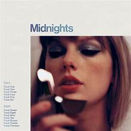

Portada del álbum

Historia
*Midnights* fue lanzado el 21 de octubre de 2022. Taylor describió el álbum como “una colección de música escrita en medio de la noche”. Incluye colaboraciones con Jack Antonoff y explora géneros como synth-pop y dream pop. El disco rompió récords de ventas y streaming, consolidando a Taylor como una de las artistas más influyentes de la década.
Tabla de canciones destacadas
| Número | Canción | Duración |
|---|---|---|
| 1 | Lavender Haze | 3:22 |
| 2 | Maroon | 3:38 |
| 3 | Anti-Hero | 3:21 |
| 4 | Snow On The Beach (feat. Lana Del Rey) | 4:16 |
Video destacado en YouTube
Enlaces externos
Interacción con etiquetas
Premios y reconocimientos
El álbum Midnights ganó múltiples premios, incluyendo el MTV Video Music Award por “Video del Año” con Anti-Hero. También fue nominado en los Grammy y se convirtió en uno de los discos más vendidos de 2022.
Curiosidades
- Taylor escribió gran parte del álbum inspirada en pensamientos nocturnos.
- “Snow On The Beach” fue la primera colaboración oficial con Lana Del Rey.
- El álbum rompió récords de streaming en Spotify en su primer día.
- La edición especial incluyó vinilos con colores únicos.
Tabla de impacto
| Año | Evento | Impacto |
|---|---|---|
| 2022 | Lanzamiento del álbum | Récord de ventas y streams |
| 2023 | Premios MTV | Ganó “Video del Año” |
| 2024 | Tour mundial | Más de 3 millones de asistentes |
Juego en Canvas: Estrellas de Medianoche
Haz clic dentro del lienzo para crear estrellas ✨
Indicadores
Popularidad global:
Progreso escuchando todas las canciones: